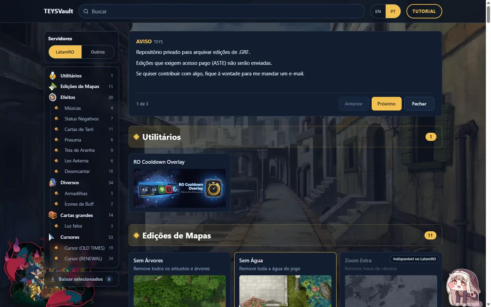
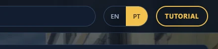
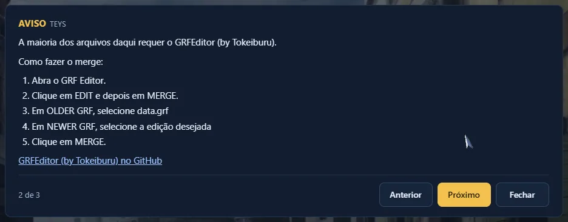
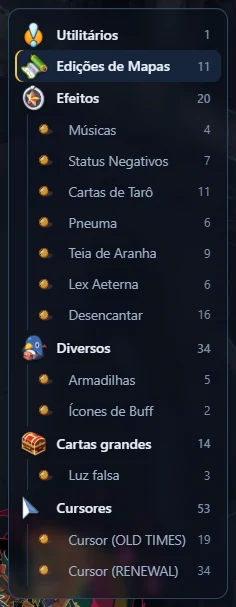
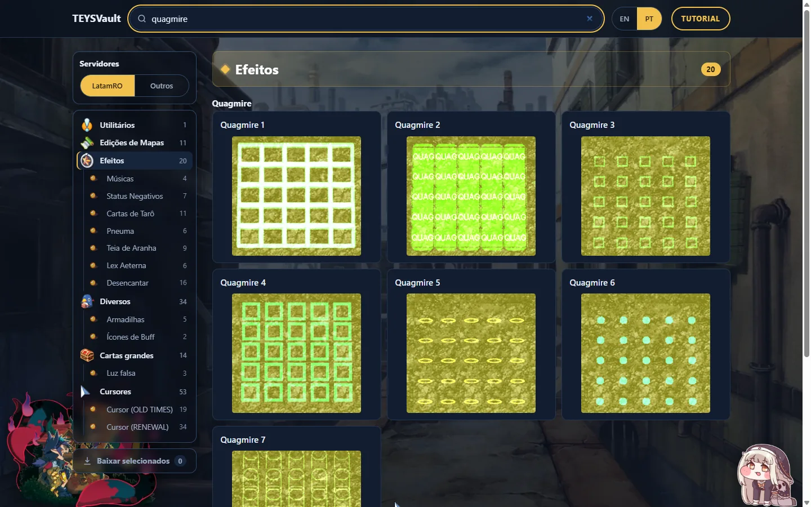
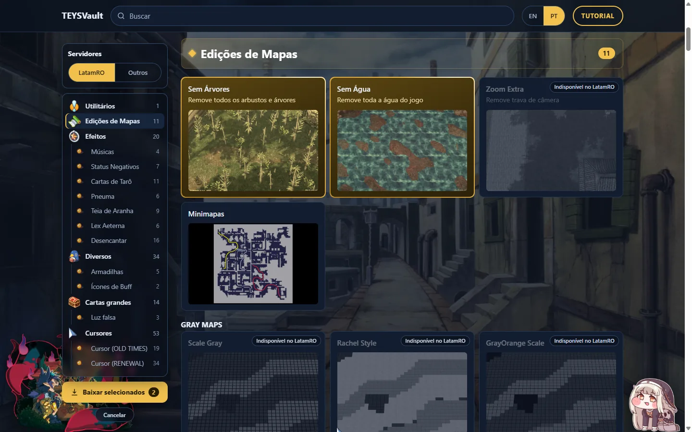
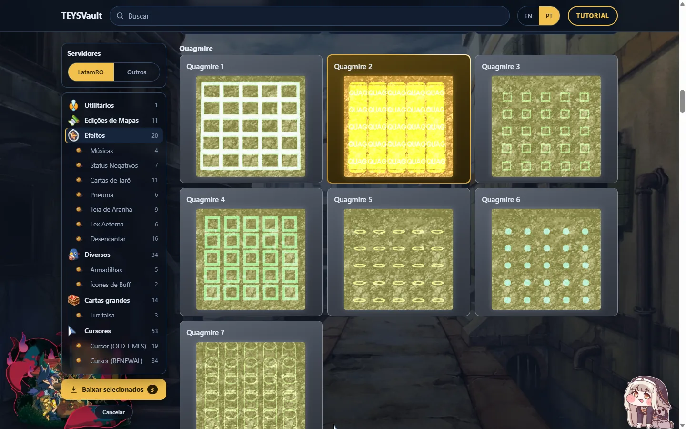
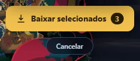
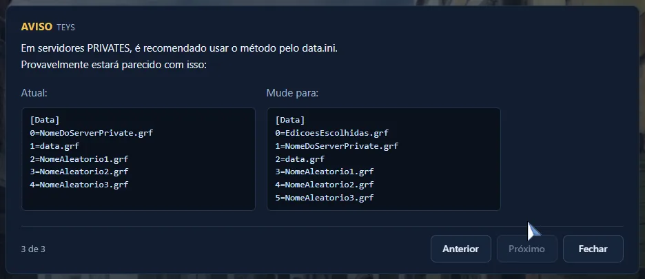

TUTORIALTEYSVoltar ao site

Bem-vindo
Um acervo de edições de .grf para Ragnarok: mapas, efeitos, cursores, cartas e mais.
Você escolhe as edições, baixa tudo em um arquivo só e instala no jogo.

Passo 1
Clique em EN ou PT, no canto superior direito.
O site lembra sua escolha.

Passo 2
A caixa AVISO tem 3 páginas com as instruções de instalação.
Fechar esconde. Mostrar aviso traz de volta.

Passo 3
Clique em uma categoria na barra da esquerda para pular até ela.
O número mostra quantas edições existem ali.

Passo 4
Digite no campo Buscar. Funciona em português e inglês.

Passo 5
Clique nos cards que quiser. Selecionado = borda dourada.
Clique de novo para desmarcar.

Passo 6
Cursores, Quagmire, estilos de mapa e Tarô: só dá para usar um de cada.
Ao escolher outro, o anterior é desmarcado. Os demais ficam prateados.

Passo 7
Clique em Baixar selecionados. Sai um arquivo só: teysvault.grf.
Mapas grandes (Scale Gray, Sunlight, Niflheim…) baixam separados.

Passo 8
GRF Editor: EDIT → MERGE. Older = data.grf, Newer = teysvault.grf.
Servidor privado: coloque 0=teysvault.grf no topo do data.ini.